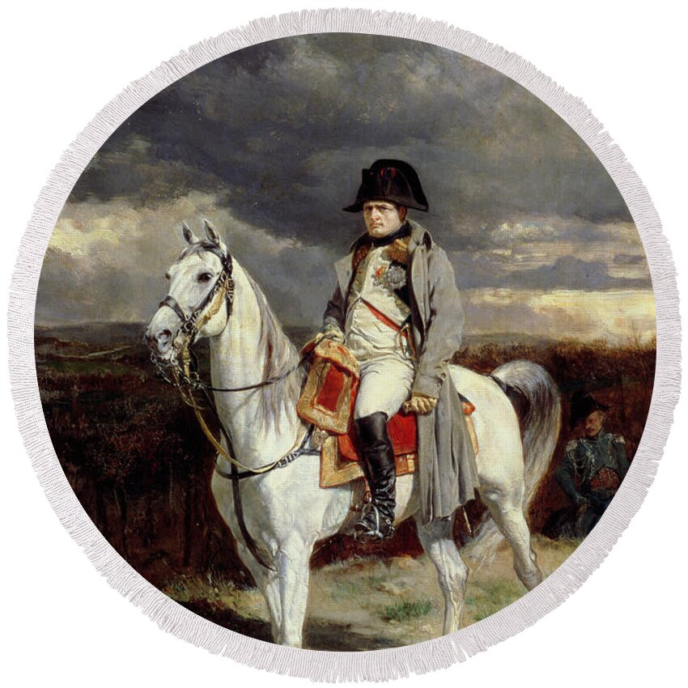
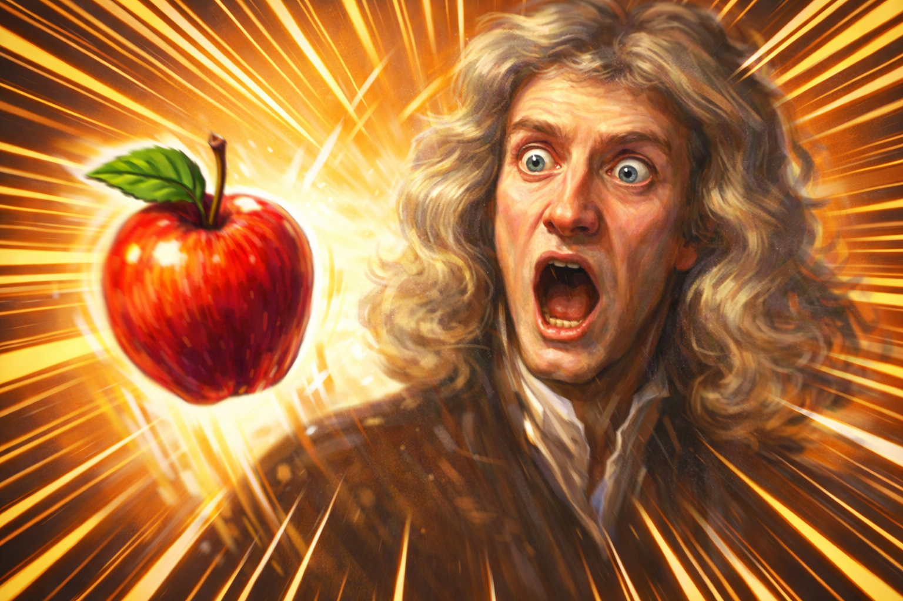

Newton
•13 hours ago

Newton
Sziasztok! Be szeretném mutatni legújabb hihetetlen, csodás, emberfeletti felfedezésemet miszerint ha valamit ledobunk akkor az leesik.

George
•2 days ago
Geroge
Nehéz tél volt, de nem adjuk fel. A szabadságért harcolunk!
Napoleon
•6 days ago
Napoleon
Srácok megyünk Oroszországba, reméljük nem lesz annyira hideg.